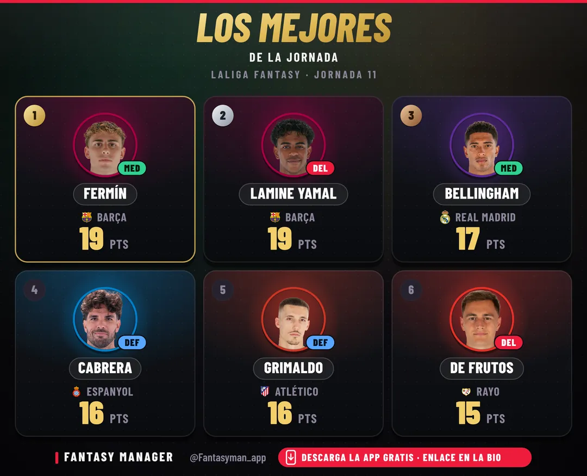

Resumen de la jornada 11
Del viernes 30 de octubre al lunes 2 de noviembre · puntos oficiales con los de DAZN, a lunes 16 de noviembre a las 22:42
Los mejores de la jornada
| # | Jugador | Pts | Media |
|---|---|---|---|
| 1 | 19 | 13,1 | |
| 2 | 19 | 9,3 | |
| 3 | 17 | 9,8 | |
| 4 | 16 | 7,9 | |
| 5 | 16 | 6,1 | |
| 6 | 15 | 13,3 | |
| 7 | 15 | 12,3 | |
| 8 | 15 | 10,4 | |
| 9 | 15 | 6,4 | |
| 10 | 15 | 4,5 |
Once ideal de la jornada 11
Lo que ya se jugó, no una recomendación. Cómo se elige.

Resultados y MVP de cada partido
 Villarreal0-1Espanyol
Villarreal0-1Espanyol vie 30, 21:00
vie 30, 21:00 MVP: Cabrera 16
MVP: Cabrera 16 Levante0-2Atlético
Levante0-2Atlético sáb 31, 14:00
sáb 31, 14:00 MVP: Grimaldo 16
MVP: Grimaldo 16 Rayo3-0Celta
Rayo3-0Celta sáb 31, 16:15
sáb 31, 16:15 MVP: De Frutos 15
MVP: De Frutos 15 Betis2-1Málaga
Betis2-1Málaga sáb 31, 18:30
sáb 31, 18:30 MVP: Isco 15
MVP: Isco 15 Barça6-1Alavés
Barça6-1Alavés sáb 31, 21:00
sáb 31, 21:00 MVP: Fermín 19
MVP: Fermín 19 Getafe3-1Sevilla
Getafe3-1Sevilla dom 1, 14:00
dom 1, 14:00 MVP: Satriano 14
MVP: Satriano 14 Racing0-3Real Madrid
Racing0-3Real Madrid dom 1, 16:15
dom 1, 16:15 MVP: Bellingham 17
MVP: Bellingham 17 Elche0-1Valencia
Elche0-1Valencia dom 1, 18:30
dom 1, 18:30 MVP: Danjuma 10
MVP: Danjuma 10 Athletic2-1Real Sociedad
Athletic2-1Real Sociedad dom 1, 21:00
dom 1, 21:00 MVP: Nico Williams 11
MVP: Nico Williams 11 Deportivo2-1Osasuna
Deportivo2-1Osasuna lun 2, 21:00
lun 2, 21:00 MVP: Mario Soriano 13
MVP: Mario Soriano 13
Los que doblaron su media
| Jugador | Pts | Media |
|---|---|---|
| 13 | 3,4 | |
| 14 | 4,1 | |
| 15 | 4,5 | |
| 13 | 4,1 | |
| 12 | 4,3 | |
| 10 | 3,7 |
6 sacaron el doble de su media o más, con 10 puntos o más; el que más se pasó, Enes Ünal: 13 con 3,4 de media.
Los peores de la jornada
| Jugador | Pts | Media |
|---|---|---|
| -4 | 7,4 | |
| -4 | 3 | |
| -4 | 2 | |
| -4 | 5,3 | |
| -3 | 4,3 | |
| -2 | 1,1 |
6 terminaron restando puntos.
Los equipos que más puntos dieron
Los que más
| Equipo | Pts |
|---|---|
| 129 | |
| 128 | |
| 124 | |
| 115 | |
| 102 |
Los que menos
| Equipo | Pts |
|---|---|
| -16 | |
| 26 | |
| 34 |
La semana del mercado
Del 27 de octubre al 29 de octubre hubo 2 cambios de mercado entre la jornada 10 y el cierre de cláusulas de la 11. Diomande fue el que más se revalorizó: 5 M en esos días. En el otro lado, J. David perdió 3,4 M. El mejor negocio, sumando lo que subió y sus puntos de la jornada a 100 mil cada uno (lo que paga LaLiga): Diomande, 6,2 M.
Ganaron
| Jugador | Semana |
|---|---|
| +5 M | |
| +4,4 M | |
| +4,3 M | |
| +3,2 M | |
| +2,7 M |
Perdieron
| Jugador | Semana |
|---|---|
| -3,4 M | |
| -3,3 M | |
| -2,7 M | |
| -2,5 M | |
| -2,4 M |
Negocio
| Jugador | Subida + puntos |
|---|---|
| 6,2 M | |
| 5,8 M | |
| 4,8 M | |
| 4,7 M | |
| 4,2 M |
Valor al primer cambio de mercado tras la jornada 10 frente al último antes del cierre. Cómo se mueve el valor, en valor de mercado.
La jornada 11, en corto
La jornada 11 se jugó del viernes 30 de octubre al lunes 2 de noviembre: 10 partidos y 30 goles. El resultado más abultado fue el Barça 6-1 Alavés. No hubo ni un empate.
Arriba, empatados a 19 puntos, Lamine Yamal (Barça) y Fermín (Barça). Enes Ünal sacó 13, más del doble de lo que suele (3,4 de media).
El once ideal de lo que se jugó, en 3-4-3, suma 174 puntos. Entre equipos, el Real Madrid dio 129 puntos y el Alavés se quedó en -16. 6 jugadores acabaron en negativo; el peor, Sivera con -4.
Puntos oficiales de LaLiga Fantasy, con los de DAZN. Cómo hacemos el resumen.